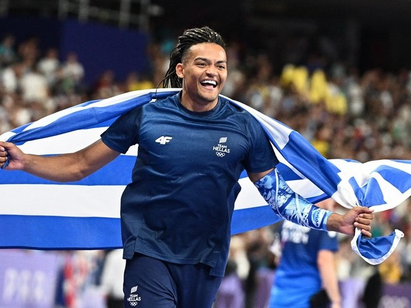
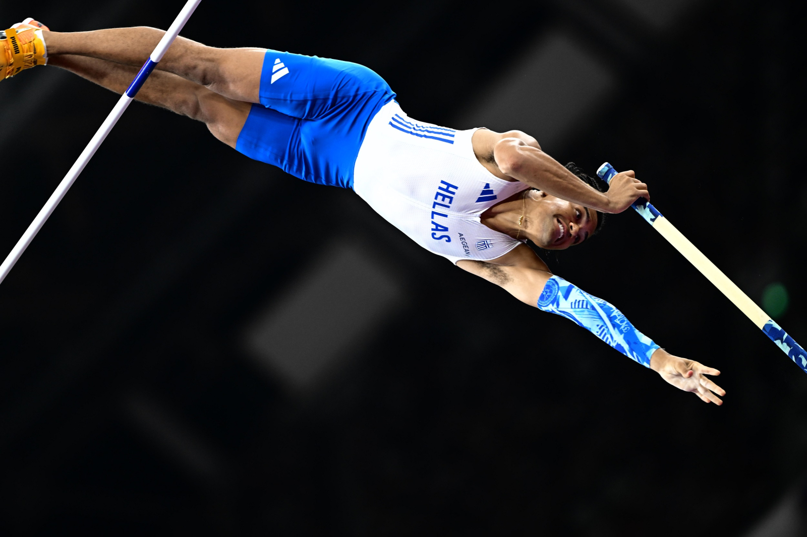
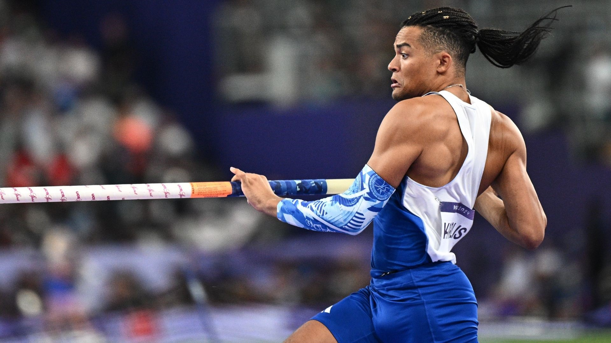
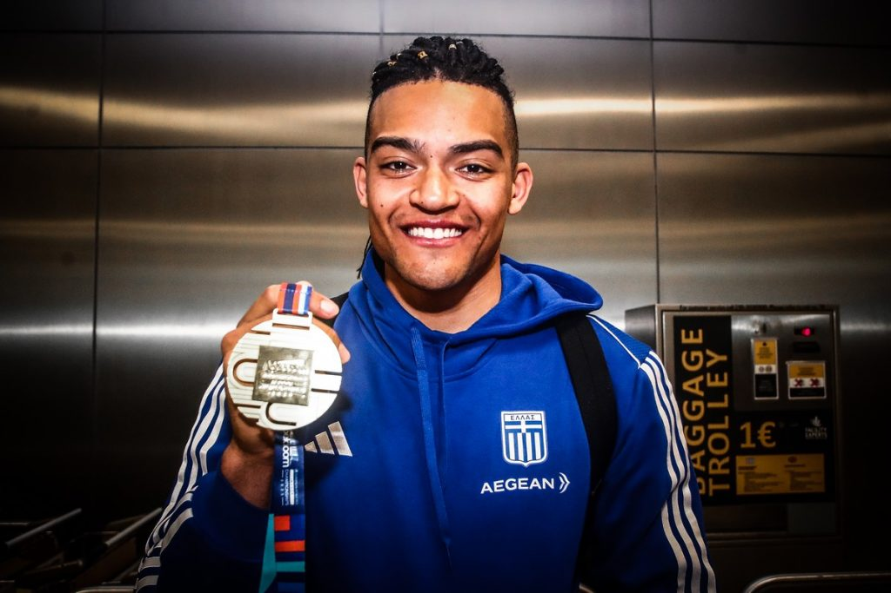
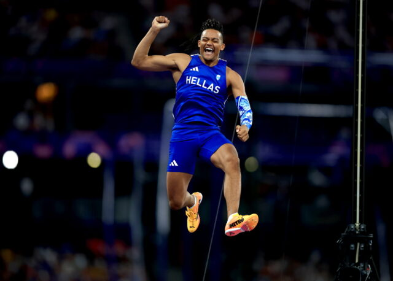
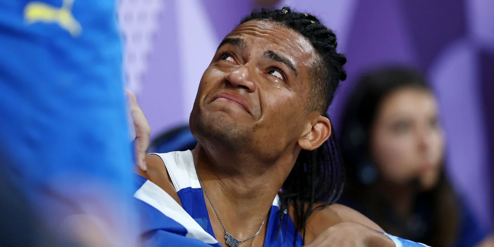
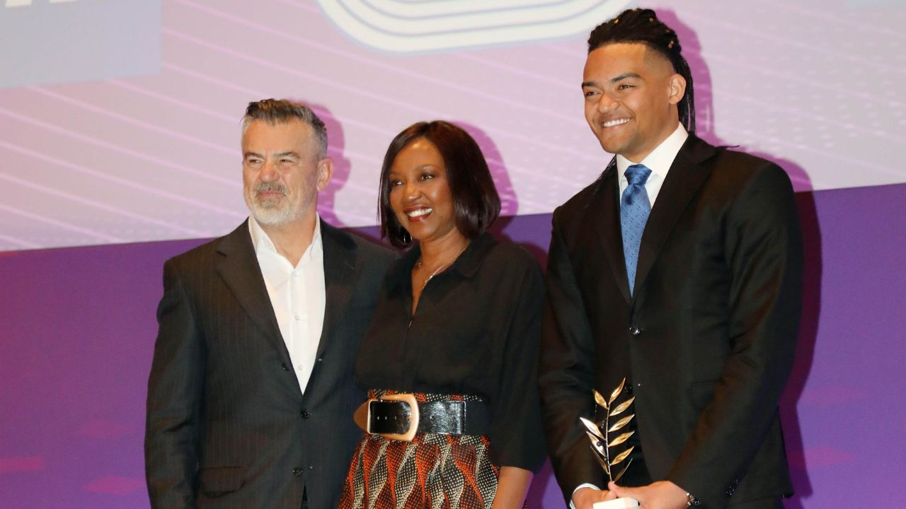

Καλωσήρθατε στον κόσμο του "Μανόλο"
Ανακαλύψτε τη διαδρομή του Εμμανουήλ Καραλή, του αθλητή που με το πηγαίο χαμόγελο και το αγωνιστικό του πείσμα που κατέκτησε την κορυφή του παγκόσμιου στίβου.
Από τα πρώτα του άλματα στην Αθήνα μέχρι το ιστορικό χάλκινο μετάλλιο στους Ολυμπιακούς Αγώνες του Παρισιού και το "φράγμα" των 6 μέτρων, περιηγηθείτε στις στιγμές που διαμόρφωσαν την πορεία του.
Χρησιμοποιήστε το πλευρικό μενού στα αριστερά για να εξερευνήσετε τα προσωπικά του στοιχεία και την αθλητική του εξέλιξη.
Προσωπικά Στοιχεία
Όνομα: Εμμανουήλ (Μανόλο) Καραλής
Άθλημα: Άλμα επί κοντώ
Ο Εμμανουήλ Καραλής γεννήθηκε στις 20 Οκτωβρίου 1999 στην Αθήνα.
Μεγαλωμένος σε μια αθλητική οικογένεια, με πατέρα πρωταθλητή του δεκάθλου
και μητέρα αθλήτρια του μήκους, ο «Μανόλο» βρήκε το δικό του δρόμο στο
άλμα επί κοντώ. Η επιμονή του και το πηγαίο του χαμόγελο τον έχουν κάνει
έναν από τους πιο αγαπητούς αθλητές στην Ελλάδα, ενώ η κορυφαία στιγμή
της μέχρι τώρα πορείας του ήταν η κατάκτηση του χάλκινου μεταλλίου
στους Ολυμπιακούς Αγώνες του Παρισιού το 2024.

Αθλητική Πορεία
Η ενασχόληση του Εμμανουήλ Καραλή με τον στίβο ξεκίνησε από τον Γ.Σ. Κηφισιάς, όπου γρήγορα ξεχώρισε για την τεχνική και το αγωνιστικό του πνεύμα.
Ήδη από το 2016, σε ηλικία μόλις 16 ετών, τράβηξε τα βλέμματα της παγκόσμιας κοινότητας καταρρίπτοντας το παγκόσμιο ρεκόρ παίδων με άλμα στα 5,53μ.,
ενώ την ίδια χρονιά στέφθηκε Πρωταθλητής Ευρώπης στην κατηγορία Κ18 στην Τιφλίδα.
Η μετάβασή του στην κατηγορία των ανδρών συνοδεύτηκε από σταθερή ανοδική πορεία, παρά τους τραυματισμούς που αντιμετώπισε. Στους Ολυμπιακούς Αγώνες
του Τόκιο (2021) κατέλαβε την εντυπωσιακή 4η θέση, δείχνοντας ότι ανήκει στην ελίτ. Το 2023 κατέκτησε το πρώτο του μεγάλο μετάλλιο σε επίπεδο ανδρών,
το ασημένιο στο Ευρωπαϊκό Πρωτάθλημα Κλειστού Στίβου στην Κωνσταντινούπολη.
Το 2024 αποτέλεσε τη χρονιά της απόλυτης καθιέρωσης. Ξεκίνησε με το χάλκινο μετάλλιο στο Παγκόσμιο Κλειστού στη Γλασκόβη, ακολούθησε το ασημένιο στο
Ευρωπαϊκό της Ρώμης και κορυφώθηκε με το χάλκινο Ολυμπιακό μετάλλιο στο Παρίσι. Τον Αύγουστο του ίδιου έτους, στο Diamond League της Σιλεσίας, έγινε
ο πρώτος Έλληνας που ξεπέρασε το "φράγμα" των 6 μέτρων (6,00μ.), ενώ το 2025 βελτίωσε το πανελλήνιο ρεκόρ στον κλειστό στίβο με το εντυπωσιακό 6,05μ.

Φωτογραφίες
Καλώς ορίσατε στη συλλογή φωτογραφιών του Εμμανουήλ Καραλή.
Εδώ μπορείτε να περιηγηθείτε στις πιο έντονες στιγμές της αθλητικής του πορείας,
από την προετοιμασία και τους μεγάλους αγώνες, μέχρι τις στιγμές της απόλυτης δικαίωσης στο βάθρο.
Επιλέξτε μια κατηγορία από το πλευρικό μενού για να δείτε το αντίστοιχο άλμπουμ.

Το Εκπληκτικό Άλμα που χάρησε στον Μανόλο την Παγκόσμια Διάκριση

Παγκόσμιο Πρωτάθλημα Κλειστού Στίβου στη Γλασκόβη
Ο "ιπτάμενος" Μανόλο σε μια εντυπωσιακή προσπάθεια στο Ευρωπαϊκό Πρωτάθλημα της Ρώμης

Χαρά και Ενθουσιασμός για την κατάκτηση του Χάλκινου Μεταλλίου
Ο Εμμανουήλ Καραλής παραλαμβάνει το βραβείο του Κορυφαίου Έλληνα Αθλητή για το 2025

Κατάκτηση του Χάλκινου Ολυμπιακού Μεταλλίου στο Παρίσι το 2024

Δάκρυα Χαράς και Δικαίωσης, μετά από την Επιτυχία του στον Αγώνα

Ο Εμμανουήλ Καραλής με τους γονείς του στα βραβεία ΠΣΑΤ
Αθλητικές Διακρίσεις & Επιτεύγματα
Η πορεία του Εμμανουήλ Καραλή στους στίβους αποτελεί μια διαδρομή συνεχούς εξέλιξης,
απόλυτης προσήλωσης και ιστορικών επιδόσεων. Από τις πρώτες του διεθνείς συμμετοχές ως έφηβος
μέχρι την ανάδειξή του σε έναν από τους κορυφαίους επικοντιστές του πλανήτη, ο «Μανόλο» έχει
συνδέσει το όνομά του με μερικές από τις πιο λαμπρές σελίδες του ελληνικού κλασικού αθλητισμού.
Σε αυτή την ενότητα μπορείτε να ανατρέξετε αναλυτικά στα μετάλλια που κατέκτησε σε Εθνικό και
Διεθνές επίπεδο, καθώς και στα Πανελλήνια και Παγκόσμια ρεκόρ που κατέρριψε, συμπεριλαμβανομένης
της ιστορικής υπέρβασης των 6 μέτρων.
Χρησιμοποιήστε το πλευρικό μενού για να περιηγηθείτε στις κατηγορίες των μεταλλίων και των ρεκόρ.
Σύνδεσμοι & Πολυμέσα
Μείνετε σε επαφή με τον ψηφιακό κόσμο του Εμμανουήλ Καραλή. Η δράση του "Μανόλο"
επεκτείνεται μέσα από μια έντονη παρουσία στα μέσα κοινωνικής δικτύωσης,
ενδιαφέρουσες συζητήσεις και οπτικοακουστικό υλικό που εμπνέει τη νέα γενιά αθλητών.
Εδώ μπορείτε να βρείτε συγκεντρωμένες τις σημαντικότερες συνεντεύξεις του,
βίντεο με τις κορυφαίες του επιδόσεις από παγκόσμια meetings, καθώς και
τους επίσημους διαδικτυακούς συνδέσμους (social media) για να παρακολουθείτε
την καθημερινότητά του και το πρόγραμμα των αγώνων του σε πραγματικό χρόνο.
Επιλέξτε μια κατηγορία από το πλευρικό μενού για να δείτε το αντίστοιχο περιεχόμενο.
Σύνδεση Διαχειριστή
Καλώς ήρθατε στο περιβάλλον Διαχείρισης
Παρακαλώ επιλέξτε μία λειτουργία από το πλευρικό μενού στα αριστερά.